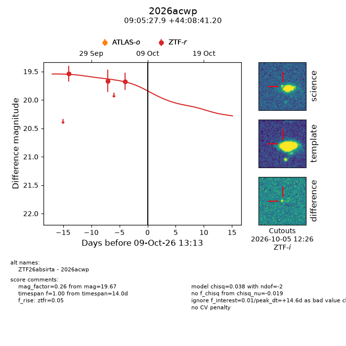
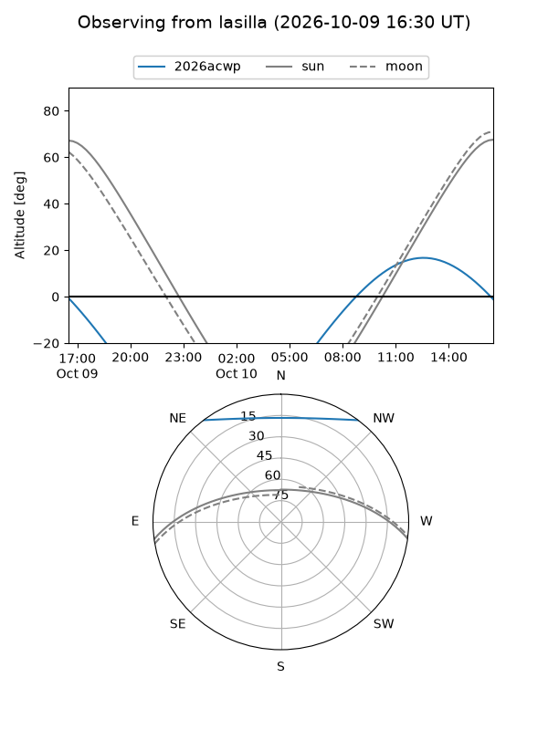
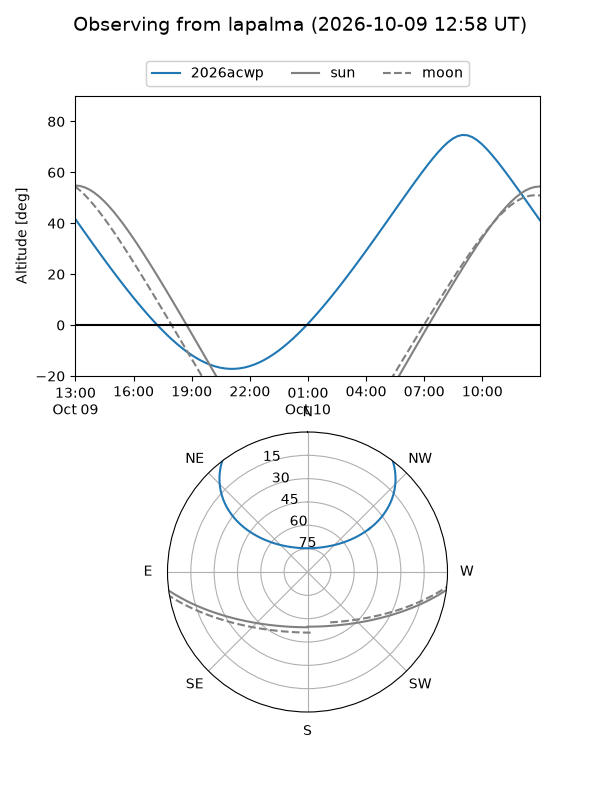
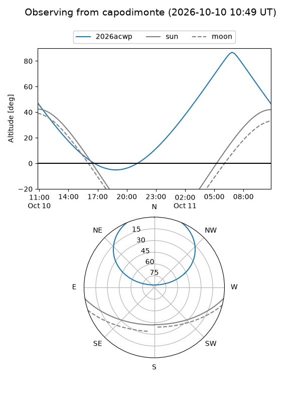
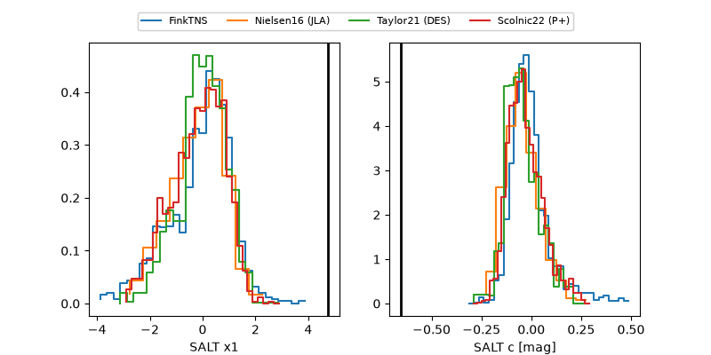

2026acwp
Target 2026acwp at 2026-10-09 13:16
Aliases and brokers:
FINK-ZTF: ztf.fink-portal.org/ZTF26absirta
Lasair-ZTF: lasair-ztf.lsst.ac.uk/objects/ZTF26absirta
ALeRCE-ZTF: alerce.online/object/ZTF26absirta
YSE-PZ: ziggy.ucolick.org/yse/transient_detail/2026acwp
TNS name: wis-tns.org/object/2026acwp
Direct TNS query: direct search
alt names
ZTF26absirta (ztf,fink_ztf)
2026acwp (tns,yse)
Coordinates:
equatorial (ra, dec) = 136.3663,+44.14478
equatorial (HMS+DMS) = 09:05:27.91,+44:08:41.20
galactic (l, b) = (176.6504,+42.07732)
Flags:
peak dt: +14.6
Photometry:
last ztfr=19.67
3 ztfr detections
Lightcurve

Visibility



Additional plots
